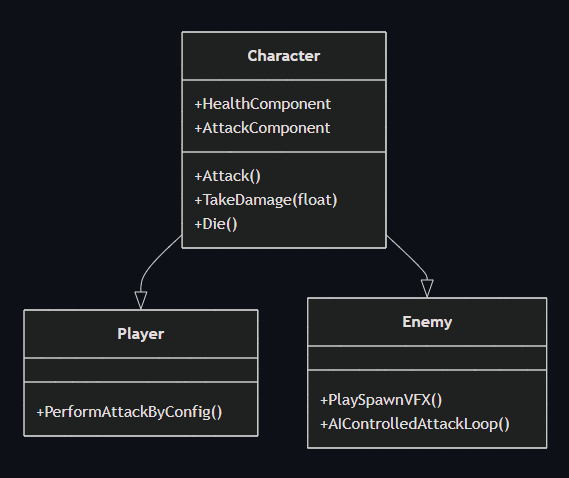
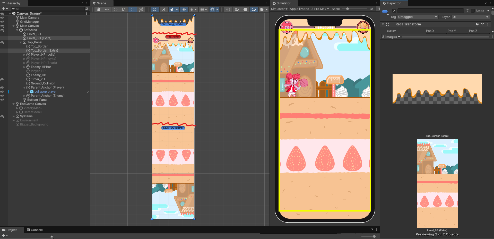
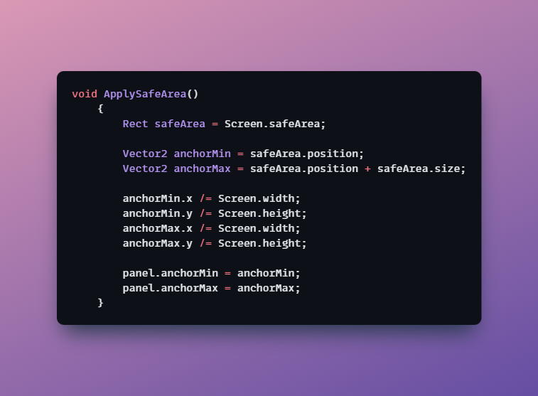

Candy Dandy
Status: Finished
Type: 2D Mobile Game
Duration: 9 ~ 12 weeks
Engine: Unity
Language: C#
Roles: Programmer, Scrum Master
Team: 3 Developers, 5 Artists
About Candy Dandy
Candy Dandy was our final exam project at Mediacollege, bringing together both Game Development and Game Art students under a real client brief. The goal: create an innovative match-3 mobile game where the match-3 mechanic directly influences a secondary gameplay layer. Our client, Ramses Di Perna — a Game Developer at Azerion and an alumnus of our college — guided us through the process. View on GitHub
Note: This game currently has an Android build available. If you’d like to test it on PC, there’s also a Windows build, but keep in mind it’s designed for mobile — so expect stretched visuals!
The final product, gameplay starts at ~2:08
My Features
- Designed and implemented Character Classes
- Built the Combat System
- Handled Canvas & UI scaling for mobile
Project Kickoff
The project began with a briefing from three external clients. After discussing our options as a team, we secured our first-choice client. We then contacted them, asked clarifying questions, and exchanged contact details to maintain regular updates. On the first day, our team brainstormed ideas: some leaned towards a dating sim, others a cake-baking sim, but the other two developers and I pushed for a unique fighting game concept.
We debated the screen orientation: some preferred landscape, others portrait. One of our artists created mockups for both versions to get the client’s input. In the end, we went with the fighting game in portrait mode, as it best fit the brief and balanced development and art workload.

Concept 1: Portrait — matching and fighting on the same screen.
Concept 2: Landscape — full-screen matching with a transition to fighting cutscenes.
Development
All characters in Candy Dandy (both Player and Enemies) share a common Character base class. This base class provides core functionality every character needs, including Variables, components, references & basic functions such as TakeDamage() and Die(). Character System

The AttackComponent manages how each character performs attacks using AttackConfig ScriptableObjects. Each AttackConfig holds the data for a unique attack — like name, damage, animation trigger, and delay — all tweakable directly in the Inspector. Full code of Attack System can be found here: Attack System

Key Features: Flexible attack setup with reusable ScriptableObjects, Optional AI-controlled attack loop & Easily switch or trigger attacks by index.
Footage of Version 1: This exposed scaling issues that needed to be tackled. Full feedback? Click Here
After client feedback, I researched Unity's Canvas Scaler and Safe Area to ensure UI consistency across different resolutions. I created a canvas with the following properties: Render Mode, Screen Space - Camera. Reference Resolution 1920x1080, also known as Full HD.

In the image above you see the initial new scene set-up.
Here I converted gameplay elements — both static and moving — to Rect Space, so their size is measured in pixels instead of meters.
The colors represent different parts of the canvas:
Red marks the Top Panel, where the player and enemies spawn and battle with flashy effects.
Green marks the Bottom Panel. There’s not much UI here yet — the grid is its own entity — but this space is reserved for the Special Attack Meter and Pause button in the final version.
Blue is a larger fallback background to prevent empty borders on bigger screens like tablets and iPads.


Initial implementation cropped gameplay inside SafeArea bounds, causing empty borders on larger screens. I solved this by mirroring art assets to fill excess space.
Version 2: scaling fixes implemented, tested on multiple devices.
Conclusion
Safe Area Handler This simple but crucial class makes sure that any UI element parented under this object always stays within the device’s safe screen boundaries (avoiding notches, rounded corners, or system bars). ApplySafeArea() gets the device’s safe area (Screen.safeArea), converts its pixel coordinates into normalized anchor values (0–1), and sets these as the anchorMin and anchorMax of the attached RectTransform. This means the UI panel will automatically resize and reposition itself to fit perfectly within the safe area on any screen — whether it’s an iPhone with a notch, a tablet, or an Android with soft keys.

This function ensures that everything inside this UI panel fits perfectly within the screen’s safe area, adapting to notches, rounded corners, or soft keys. It converts the safe area from pixels to normalized anchors, so the UI scales correctly on any resolution.
All the visuals shown — especially the integration of Visual Effects and the technical implementation of Animations — were handled by me, as the technical side of art was my main responsibility. I also collaborated closely with each artist to ensure texture sizes and resolutions followed a Power-Of-Two format for optimal compression and performance. For more technical details, see the VFX System.
Candy Dandy taught me a lot about working in a team without a concrete lead and balancing tasks across disciplines. It was my second attempt at mobile game development — and my first successful one. A key takeaway was learning about Safe Areas on mobile devices and how to use Safe Area Handler scripts to handle them properly. I also gained valuable insight into placing important UI elements, so they stay functional and clear on small, portrait screens.